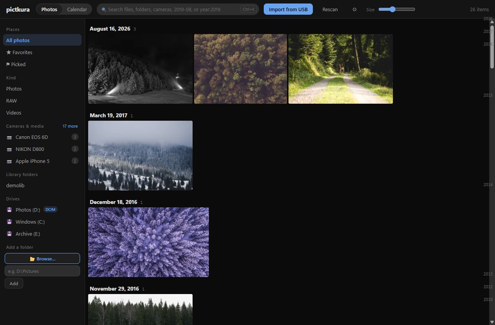
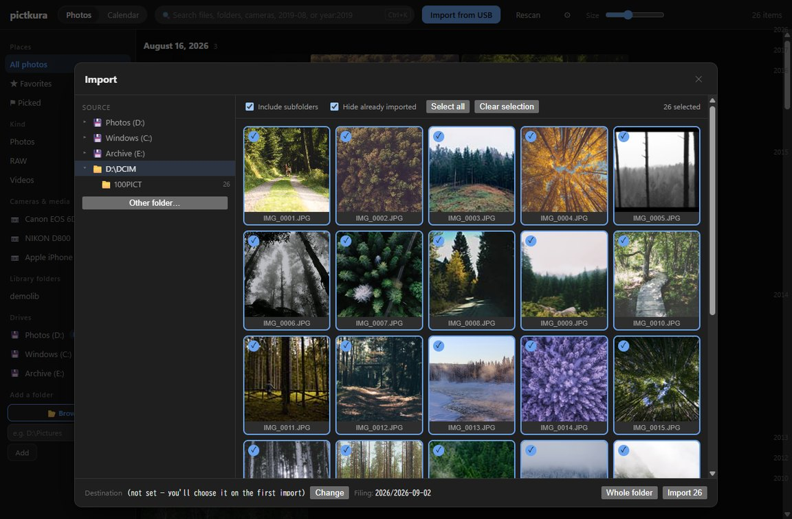
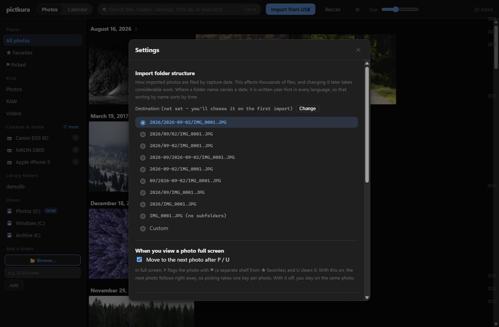
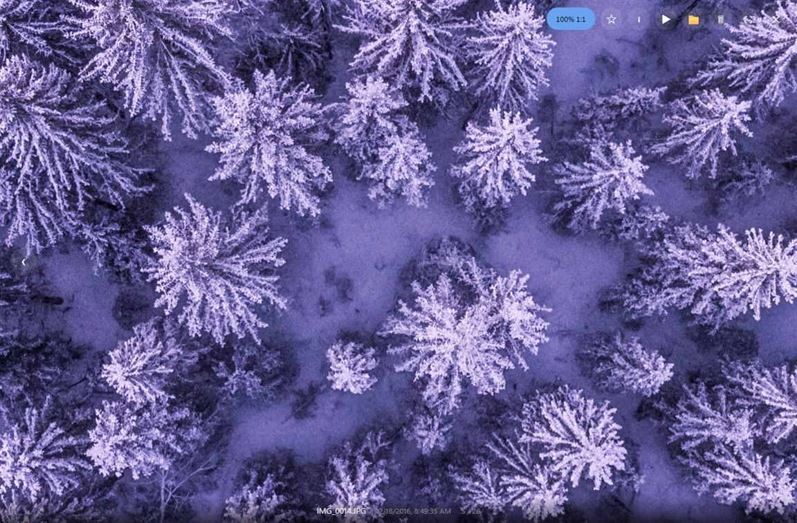

Windows 10 / 11 and macOS 11+ — v0.2.0
Tens of thousands.
No waiting.
Importing from a camera card, and browsing what you already have. Those two things only — written in Rust, with everything we did not build spent on speed instead.

The library, laid out by date. Drag the bar on the right edge to cross years at once.
0
Directories walked at startup. The NTFS change journal hands over only what changed since last time
20s
For 3,166 cloud-only files, measured — and zero network traffic while doing it
2.5×
Thumbnails. SIMD scaling, and JPEG decoded at a reduced scale rather than in full
FTS5
Every search is an index seek. CJK is expanded to bigrams, so substrings match too
A photograph is looked at
far longer than it took to make.
It is fast because of what is missing
Rust + Tauri v2
No bundled browser
The window is the OS WebView; the work is native. Nothing ships a runtime with it, so the download and the cold start both stay small.
media://
No base64
Image bytes stream through a custom protocol, never re-encoded into a string a third larger than the file itself.
Virtual scroll
Nothing exists off-screen
Only what you can see is drawn. However many photos the library holds, the number of elements on screen stays the same.
No layout shift
Sized before the pixels arrive
Width and height live in the database, so tiles never jump around while a screenful loads.
Scan & serve
The grid moves while it scans
Directory scans run outside the database lock. Add a folder and the days fill in as they are found.
No hashing
Files are never re-read
Change detection is size and modification time only. Nothing hashes the contents of your photos on every pass.
Starting at the card slot


Copy to any folder you like. Files are filed by capture date using one of nine presets, or a pattern you write yourself, such as {year}/{month} — the resulting folder name is shown as you type.
Sidecars travel with the photo
An .xmp or .dop written by a raw developer shares the photo's name, and comes along with it.
"Already imported" cannot drift
Hiding what you already have uses the same check as the importer, so what you see matches what would happen.
Sizes are verified after each copy
Progress, time remaining and the photo currently being copied are all shown while it runs.
Two shelves for choosing

POne frame out of a burst
⚑ is a separate shelf from ★ favourites, so the leftovers of a culling session never fill up what you love.
XRejecting deletes nothing yet
Closing the viewer shows you the faces first, then moves them all at once. Deleting always goes through the recycle bin.
For photos you will come back to
The search box takes ★, camera:α7 or 2019-08 as they are.
RAW, without developing it
pictkura pulls out the display JPEG the camera wrote for its own screen. No demosaicing to pay for, and the colour is exactly what the camera rendered. Checked against 28 real files from 16 makers.
Photos
jpg png webp avif
heic heif hif tif
bmp gif svg
The AVIF decoder is bundled. HEIC pixels are decoded by the OS
RAW
cr2 cr3 nef arw
raf orf rw2 dng
pef srw 3fr x3f …
24 extensions confirmed to give up their preview. Apple ProRAW included
Video
mp4 m4v mov webm
avi mts m2ts mkv
3gp wmv mpg mpeg
Duration and dimensions come from the container header — not one pixel is decoded
One outbound connection
The only thing pictkura reaches out for is whether a newer version exists. All it sends is the version number — no photos, no file names, no folder paths. Turn it off in settings and the app never touches the network at all.
No account, ever
No sign-up, no login, no expiry date
Cloud files stay in the cloud
OneDrive "online-only" files are fetched only when you actually look at one
Photos stay where they are
Nothing is re-imported into a proprietary catalogue of its own
You can read all of it
The source is public and MIT licensed
What it cannot do, up front
Download — v0.2.0
Nothing to sign up for
Windows 10/11 (x64)
macOS 11+ (Apple Silicon)
Every file, including the MSI →
Windows installer Recommended
No administrator rights needed. Installs for your user only.
pictkura_0.2.0_x64-setup.exe 7.1 MB
Portable ZIP
Unzip and run pictkura.exe. Nothing is installed.
pictkura_0.2.0_x64-portable.zip 9.5 MB
macOS
Apple Silicon. The first launch needs a Gatekeeper step.
pictkura_0.2.0_arm64.zip 8.8 MB
The latest version information could not be retrieved. The three files above are from v0.2.0, which may no longer be the newest — check the download page or the releases page.
The builds are not code-signed, so Windows and macOS both warn you the first time. Nothing is broken and nothing is infected — the certificate simply costs money. Every prompt, screen by screen, is written out in the installation guide.